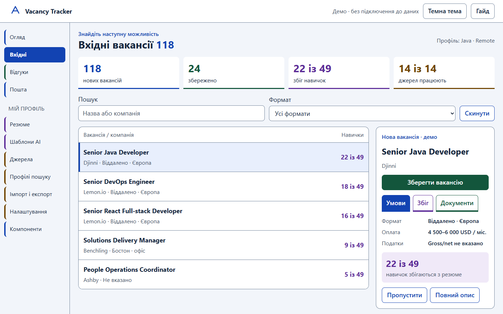

VACANCY TRACKER / МАЯК / 1.0.0
Готовий дизайн для впровадження
Світлий інтерфейс із чотирма стабільними ролями кольору: пошук, відгуки, AI та моніторинг.

Пакет містить SVG/PNG-логотипи, favicon і дві теми. Шрифти системні, без зовнішніх залежностей. Демодані та кнопки не підключені до вашого сервісу. Звіт не замінює перевірку зі скринрідером і користувачами.